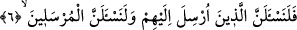

yapageldiklerinin zulüm olduğunu itiraf ve davalarının bâtıl olduğuna şehâdet
etmeleridir. Yazık ki bu fırsat elden gitmiştir. Allah’ın azabı geldikten sonra yapılan
tevbenin hiçbir faydası yoktur. Çünkü azabın gelmesi ile mükellefiyetlerin kalkması aynı
andadır. İleride geleceği üzere Yûnus (a.s.)’ın kavmi bu hükümden müstesnâdır.
Mesnevî’de şöyle denilmiştir:
Felsefeye kapılan adam, ölüm gününde
Aklı kolsuz kanatsız gördü
Garazsızca itiraf etti o zaman
Zekâ ile atımızı saçma ve akılsız yerlere sürdük
Gururumuzdan dolayı erlerden uzaklaştık
Hayal denizinde yüzdük kaldık
Halbuki ruh denizinde yüzmek hiçtir
Burada Nuh gemisine binmekten başka çare yoktur
O Peygamberler padişahı da böyle buyurdu:
Bu kül denizinde, bu okyanusta gemi benim
Benim can gözüme vâris olan
Doğrulukla benim yerime geçen halifemdir
Ey yiğit! Gemiden yüz çevirme
İşte biz, denizdeki Nuh gemisiyiz
6. Elbette kendilerine peygamber gönderilen kimseleri de, gönderilen
peygamberleri de mutlaka sorguya çekeceğiz!
“Kendilerine elçi gönderilmiş olanlara soracağız.”
Ayetin başındaki “fa” harfi, uhrevî hallerin, dünya işleri üzerine tertib edildiğini
bildirmek içindir. Bunun anlamı şöyledir: “Kıyamet günü her ümmete: “Peygamberinize
ne cevap verdiniz?” diye mutlaka soracağız.”
“Ve gönderilen elçilere de soracağız.” Peygamberlere de, ümmetlerinin kendilerine
ne cevap verdiklerini soracağız.
Ya da peygamberlere bu sorunun sorulmasından maksad, kâfirleri azarlamak ve
paylamak içindir.
“Suçlulara günahlarından sorulmaz.” (el-Kasas, 28/78) ayeti, onlardan bilgi almak
için soru sorulmaz anlamındadır. Ya da soru sorulması hesap görülürken, sorulmaması
ise cezalandırma sırasındadır.
Tefsir-i Kebir’de şöyle denilmiştir: Kâfirlere, yaptıkları davranışlar sorulmaz.
Bilakis onları böyle davranmaya sevkeden amiller ile iyiliklerden alıkoyan sebeplerin